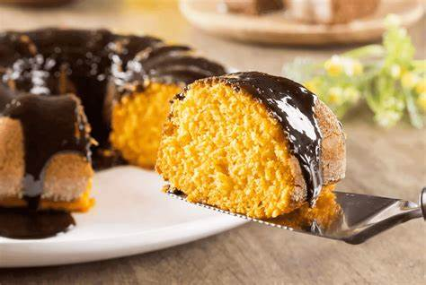

Bolo de Cenoura
Ingredientes
- 3 cenouras médias
- 3 ovos
- 1 xícara de óleo
- 2 xícaras de açúcar
- 2 e 1/2 xícaras de farinha de trigo
- 1 colher (sopa) de fermento em pó
Modo de Preparo
- No liquidificador, bata a cenoura, ovos e óleo até virar um creme.
- Transfira para uma tigela e misture o açúcar, a farinha e por último o fermento.
- Despeje em forma untada e asse por cerca de 40 minutos em forno médio (180ºC).
Cobertura (opcional)
Você pode derreter chocolate meio amargo com creme de leite para uma cobertura cremosa.